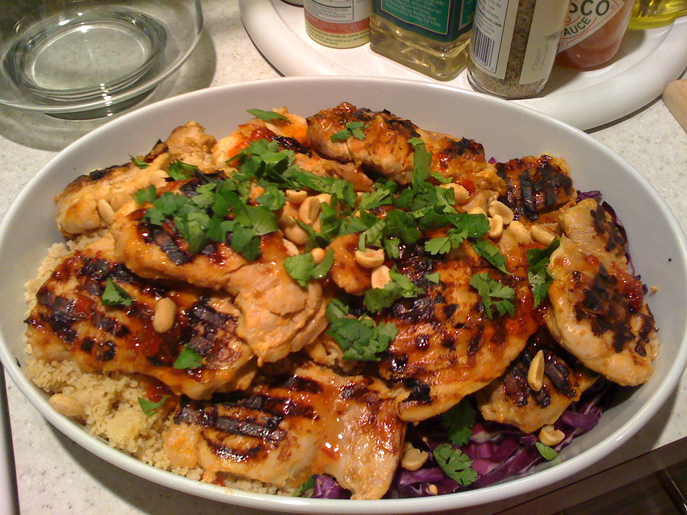

Teriyaki Chicken Thigh

Description
Teriyaki chicken is a popular Japanese dish featuring chicken coated in a sweet and savory glaze. This glaze, known as teriyaki sauce, is traditionally made with soy sauce, mirin (a sweet Japanese rice wine), and sugar. The word "teriyaki" itself comes from the Japanese words "teri" meaning "shine or luster" and "yaki" meaning "grilled or broiled," which aptly describes the glossy finish the sauce gives to the chicken when cooked. While traditionally the chicken would be grilled or broiled with the glaze, modern versions often involve stir-frying the chicken in a teriyaki sauce, creating a caramelized and flavorful dish that is both quick and easy to prepare.
Ingredients
Chicken:
- 1.5-2 lbs boneless, skinless chicken thighs
Teriyaki Sauce:
- 1/2 cup soy sauce (low sodium recommended)
- 1/4 cup brown sugar
- 1/4 cup mirin or honey
- 2 tablespoons rice vinegar
- 2 teaspoons minced garlic
- 1 teaspoon minced fresh ginger
- 1 teaspoon sesame oil
- 1 tablespoon cornstarch (mixed with 2 teaspoons water)
Steps
Prepare Teriyaki Sauce
- Combine ingredients like soy sauce, mirin (or cider vinegar), sake, water, and brown sugar in a saucepan.
- For a thicker sauce, whisk together a small amount of cornstarch and water, then whisk it into the sauce.
- Simmer the sauce until it thickens, about 3-5 minutes, then remove from heat.
- Allow the sauce to cool slightly before use.
Prepare Chicken Thigh
- Pat the chicken thighs dry with paper towels to ensure a crispy skin.
- Some recipes suggest poking the chicken with a knife to help it absorb the marinade better.
- Season with salt and pepper.
Cook Chicken Thighs
- Heat oil in a skillet over medium-high heat.
- Add the chicken and sear until golden brown on one side (e.g., 4-6 minutes for skin-on, skin-side down).
- Flip and cook the other side (e.g., 5-10 minutes more, or until cooked through).
- Drain off any excess fat.
Finish and Serve
- Add the remaining teriyaki sauce to the pan with the chicken and cook, turning the chicken often, until the sauce thickens and glazes the chicken.
- Slice the chicken and serve with rice and vegetables like broccoli, garnished with sesame seeds and green onions.
Want to go back to the Homepage? Click here